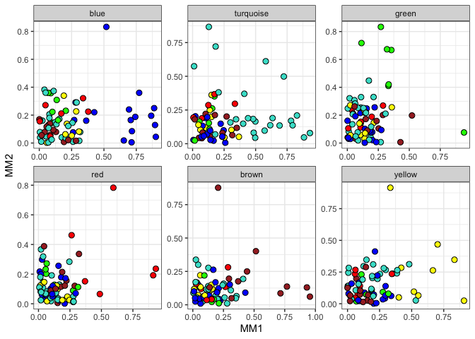

Structure Learning for Hierarchical Networks
A package to aid in structure learning for hierarchical biological regulatory networks
Documentation
Please visit https://montilab.github.io/shine/ for comprehensive documentation.
Requirements
We suggest R 3.6.0 but R (>= 3.5.0) is required to install directly from Github. For workflows, you will need Python (>= 2.7.0) and dependencies for Nextflow. Nextflow can be used on any POSIX compatible system (Linux, OS X, etc) and requires BASH and Java 8 (or higher) to be installed. Alternatively, check out usage with Docker.
Installation
Install the development version of the package from Github.
devtools::install_github("montilab/shine")
library(shine)Quick Example
data(toy) ABC
/ \
AB \
/ \ \
A B C
dim(toy)
table(toy$subtype)Variable Selection
# Filter out non-varying genes
genes.filtered <- keep.var(toy, column="subtype", subtypes=c("A", "B", "C"))
# Select top genes by median absolute deviation
genes.selected <- rank.var(toy, column="subtype", subtypes=c("A", "B", "C"), genes=genes.filtered, limit=75)
# Subset toy dataset
eset <- toy[genes.selected,]Structure Constraints
# Detect modules
wgcna <- mods.detect(eset, min.size=5, cor.fn="cor", do.plot=FALSE)
# Module membership
mods.plot(wgcna$dat, wgcna$mods, wgcna$colors, ncol=3, size=2.5)
# Module extension
mods.extended <- fuzzy.mods(wgcna$dat, wgcna$mods, p=0.75)
mods.extended$grey <- NULL
mods <- sort(sapply(wgcna$mods, length), decreasing=TRUE)
print(mods)Network Estimation
| Hint |
Once downloaded make the nextflow file accessible by your $PATH variable so you do not have to specify the full path to nextflow each time. e.g. nextflow run rather than path/to/nextflow run
|
Clone See full documentation for shine-nf.
Docker
Hierarchy

Define Workflow
#!/usr/bin/env nextflow
# wf.nf
workflow ABC {
main:
eset = "data/esets/ABC.rds"
modules = "data/modules.rds"
SPLIT( eset, modules )
LEARN( SPLIT.out.flatten() )
RECONSTRUCT( eset, LEARN.out[0].collect() )
emit:
LEARN.out[0]
}
workflow AB {
take:
prior
main:
eset = "data/esets/AB.rds"
LEARN_PRIOR( eset, prior )
RECONSTRUCT( eset, LEARN_PRIOR.out[0].collect() )
emit:
LEARN_PRIOR.out[0]
}
workflow A {
take:
prior
main:
eset = "data/esets/A.rds"
LEARN_PRIOR( eset, prior )
RECONSTRUCT( eset, LEARN_PRIOR.out[0].collect() )
}
workflow B {
take:
prior
main:
eset = "data/esets/B.rds"
LEARN_PRIOR( eset, prior )
RECONSTRUCT( eset, LEARN_PRIOR.out[0].collect() )
}
workflow C {
take:
prior
main:
eset = "data/esets/C.rds"
LEARN_PRIOR( eset, prior )
RECONSTRUCT( eset, LEARN_PRIOR.out[0].collect() )
}
workflow {
ABC()
AB(ABC.out)
A(AB.out)
B(AB.out)
C(ABC.out)
}Run
N E X T F L O W ~ version 20.07.1
Launching `wf.nf` [happy_koch] - revision: c2526aec9e
executor > local (36)
[f4/c715fd] process > ABC:SPLIT [100%] 1 of 1 ✔
[1b/37cc11] process > ABC:LEARN (6) [100%] 6 of 6 ✔
[99/23dcba] process > ABC:RECONSTRUCT [100%] 1 of 1 ✔
[1b/4e3537] process > AB:LEARN_PRIOR (6) [100%] 6 of 6 ✔
[2a/42f4df] process > AB:RECONSTRUCT [100%] 1 of 1 ✔
[da/17bb2f] process > A:LEARN_PRIOR (6) [100%] 6 of 6 ✔
[59/d209b2] process > A:RECONSTRUCT [100%] 1 of 1 ✔
[26/65e7a0] process > B:LEARN_PRIOR (6) [100%] 6 of 6 ✔
[7e/b65391] process > B:RECONSTRUCT [100%] 1 of 1 ✔
[58/721e46] process > C:LEARN_PRIOR (6) [100%] 6 of 6 ✔
[99/517354] process > C:RECONSTRUCT [100%] 1 of 1 ✔
Completed at: 21-Nov-2020 16:00:29
Duration : 2m 16s
CPU hours : 0.1
Succeeded : 36